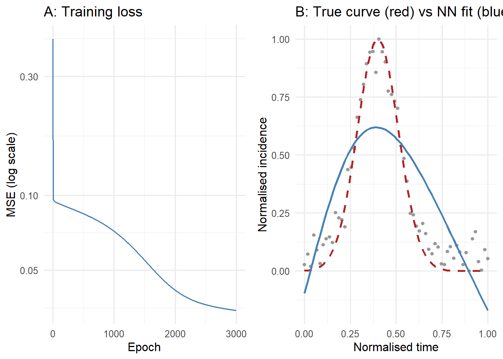

set.seed(1)
# Epidemic bell curve: peak at t=0.4, normalized to [0,1]
t_seq <- seq(0, 1, length.out = 60)
y_true <- exp(-((t_seq - 0.4)^2) / 0.025)
y_obs <- y_true + rnorm(60, 0, 0.06)
y_obs <- (y_obs - min(y_obs)) / (max(y_obs) - min(y_obs))
X <- matrix(t_seq, ncol = 1) # (60, 1)
Y <- matrix(y_obs, ncol = 1) # (60, 1)
n <- nrow(X)
n_h <- 16 # hidden units
# Random weight initialisation (Xavier-ish scale)
W1 <- matrix(rnorm(1 * n_h, 0, 0.5), 1, n_h) # (1, n_h)
b1 <- rep(0, n_h) # (n_h,)
W2 <- matrix(rnorm(n_h, 0, 0.5), n_h, 1) # (n_h, 1)
b2 <- 0 # scalarNeural Networks from Scratch: Build and Train One in Pure R
A feedforward network is matrix multiplication plus a nonlinearity, repeated. Implement forward pass and backpropagation in base R to see exactly what learning means.
machine learning
neural networks
deep learning
R
1 Why build one from scratch?
Neural networks are the backbone of modern ML — image classifiers, language models, and surrogate epidemic simulators all use the same underlying mechanism. Most tutorials start with Keras or PyTorch and let the framework handle the mathematics. That is fine for production, but it leaves the core algorithm — backpropagation — as a black box.
Building a network in base R, with no autodiff library, forces you to understand what a gradient actually means in context. Once you have done it once, the framework is transparent and debugging is straightforward (1,2).
2 Architecture: layers, neurons, activations
A feedforward network with one hidden layer maps input \(\mathbf{x}\) to output \(\hat{y}\) through:
\[\mathbf{z}^{(1)} = \mathbf{x} \mathbf{W}^{(1)} + \mathbf{b}^{(1)}, \quad \mathbf{a}^{(1)} = \tanh(\mathbf{z}^{(1)})\] \[\hat{y} = \mathbf{a}^{(1)} \mathbf{W}^{(2)} + b^{(2)}\]
The \(\tanh\) activation introduces the nonlinearity that makes universal approximation possible (3). Without it, any depth collapses to a single linear transform.
3 Forward pass and backpropagation in R
The task: learn the shape of an epidemic curve (a bell-shaped rise and fall of cases) from noise-corrupted observations, using only a scalar time index as input.
lr <- 0.05
losses <- numeric(3000)
for (epoch in seq_along(losses)) {
## ---- Forward pass ----
# Broadcast b1 across all samples
Z1 <- X %*% W1 + matrix(rep(b1, n), n, byrow = TRUE) # (n, n_h)
A1 <- tanh(Z1) # (n, n_h)
Yhat <- A1 %*% W2 + b2 # (n, 1)
diff <- Yhat - Y
losses[epoch] <- mean(diff^2)
## ---- Backward pass (chain rule) ----
dL_dYhat <- 2 * diff / n # (n, 1)
dL_dW2 <- t(A1) %*% dL_dYhat # (n_h, 1)
dL_db2 <- sum(dL_dYhat) # scalar
dL_dA1 <- dL_dYhat %*% t(W2) # (n, n_h)
dL_dZ1 <- dL_dA1 * (1 - A1^2) # tanh': (n, n_h)
dL_dW1 <- t(X) %*% dL_dZ1 # (1, n_h)
dL_db1 <- colSums(dL_dZ1) # (n_h,)
## ---- Parameter update ----
W1 <- W1 - lr * dL_dW1
b1 <- b1 - lr * dL_db1
W2 <- W2 - lr * dL_dW2
b2 <- b2 - lr * dL_db2
}
# Final prediction
Z1_pred <- X %*% W1 + matrix(rep(b1, n), n, byrow = TRUE)
Yhat_pred <- as.vector(tanh(Z1_pred) %*% W2 + b2)
cat("Initial MSE:", round(losses[1], 6), "\n")Initial MSE: 0.423582 cat("Final MSE: ", round(losses[3000], 6), "\n")Final MSE: 0.034461 library(ggplot2)
# Panel A: training loss
loss_df <- data.frame(epoch = seq_along(losses), mse = losses)
p_loss <- ggplot(loss_df, aes(x = epoch, y = mse)) +
geom_line(colour = "steelblue", linewidth = 0.7) +
scale_y_log10() +
labs(x = "Epoch", y = "MSE (log scale)", title = "A: Training loss") +
theme_minimal(base_size = 12)
# Panel B: fit vs truth
df_obs <- data.frame(t = t_seq, y = y_obs, src = "Observed")
df_true <- data.frame(t = t_seq, y = y_true, src = "True curve")
df_fit <- data.frame(t = t_seq, y = Yhat_pred, src = "NN fit")
p_fit <- ggplot() +
geom_point(data = df_obs, aes(x = t, y = y), colour = "grey60", size = 1.2) +
geom_line(data = df_true, aes(x = t, y = y), colour = "firebrick",
linewidth = 1, linetype = "dashed") +
geom_line(data = df_fit, aes(x = t, y = y), colour = "steelblue", linewidth = 1) +
labs(x = "Normalised time", y = "Normalised incidence",
title = "B: True curve (red) vs NN fit (blue)") +
theme_minimal(base_size = 12)
gridExtra_available <- requireNamespace("gridExtra", quietly = TRUE)
if (gridExtra_available) {
gridExtra::grid.arrange(p_loss, p_fit, ncol = 2)
} else {
print(p_loss)
print(p_fit)
}
4 What each piece does
Weights W1, W2: the parameters that are learned. W1 projects the scalar time index into a 16-dimensional hidden representation; W2 projects back to a scalar prediction.
tanh activation: squashes hidden unit outputs to \((-1, 1)\) and its derivative \((1 - \tanh^2(z))\) is needed in the backward pass. ReLU (\(\max(0, z)\)) is common in deeper networks; tanh is preferable for shallow regression tasks.
Backward pass: chain rule applied layer by layer from output back to input. The key quantity at each layer is \(\partial L / \partial Z\), which gates how much each weight contributed to the loss.
Learning rate 0.05: works here because data is normalised. In practice: start at 1e-3, halve it if loss diverges or plateaus after many epochs.
5 Using PyTorch in practice
Once you understand the mechanics, a framework removes the manual bookkeeping:
# Equivalent network in PyTorch (not executed)
import torch
import torch.nn as nn
model = nn.Sequential(
nn.Linear(1, 16),
nn.Tanh(),
nn.Linear(16, 1)
)
optimizer = torch.optim.Adam(model.parameters(), lr=1e-3)
for epoch in range(3000):
yhat = model(X_tensor)
loss = ((yhat - Y_tensor)**2).mean()
optimizer.zero_grad()
loss.backward() # autograd computes everything above automatically
optimizer.step()The structure mirrors the R code exactly — but loss.backward() replaces the entire manual backward pass.
6 References
1.
Rumelhart DE, Hinton GE, Williams RJ. Learning representations by back-propagating errors. Nature. 1986;323(6088):533–6. doi:10.1038/323533a0
2.
LeCun Y, Bengio Y, Hinton G. Deep learning. Nature. 2015;521(7553):436–44. doi:10.1038/nature14539
3.
Cybenko G. Approximation by superpositions of a sigmoidal function. Mathematics of Control, Signals and Systems. 1989;2(4):303–14. doi:10.1007/BF02551274